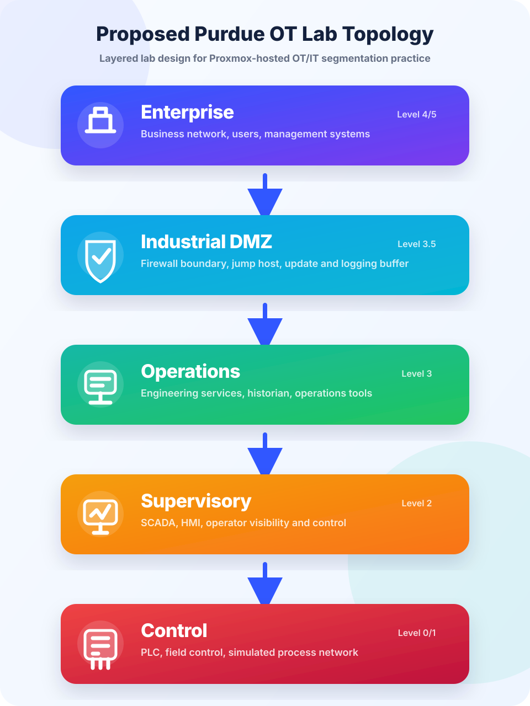

Lab foundation
Purpose
This lab is designed to show network engineering fundamentals in a practical environment that supports OT segmentation, secure architecture, and repeatable learning.
Instead of keeping OT network design as theory only, the lab uses a dedicated Proxmox server as a local platform for building virtual routers, firewalls, workstations, Linux tools, and future monitoring services.
Featured lab article
Installing Proxmox VE on a dedicated lab server
The first step in the OT Network Architecture Lab is preparing a standalone machine to run Proxmox VE. This creates an independent server where lab networks and virtual machines can be built safely without depending on a daily-use laptop or desktop operating system.
Proxmox VE is normally installed as a bare-metal virtualization platform. During installation, the selected disk is used for the server and existing data on that disk is removed, so the machine should be prepared as a dedicated lab server with backups completed first.
Why Proxmox belongs in this OT lab
Proxmox provides the base layer for a realistic engineering lab. It allows one physical machine to host several virtual systems, each with its own role in the network design. This supports safe experimentation with segmentation, routing, security zones, and monitoring without needing many separate physical devices.
Independent installation workflow
Choose a dedicated computer or server, check hardware, connect network and keyboard/display access, and back up anything important.
Download the current Proxmox VE ISO installer from the official Proxmox download page.
Write the ISO image to a USB drive using a reliable image-writing tool, then boot the lab machine from that USB device.
Select the installation target disk and filesystem, then continue through the guided installer.
Configure hostname, management IP address, gateway, DNS, admin password, and email address.
After reboot, manage the host from a browser using the Proxmox web interface on port 8006.
First validation after installation
After the first login, the important checks are simple: confirm the management IP is reachable, check that storage is visible, verify the server can update packages, and create a first small test VM before building the full OT lab design.
Useful Proxmox references
These official links support the installation workflow and should be checked before repeating the build on another machine.
Technology and methods
Initial Proxmox OT lab strategy
The lab strategy is to use Proxmox as the stable foundation for a multi-zone OT/IT practice environment. Each virtual system can represent a different part of the architecture, making it easier to test network boundaries, document design decisions, and build security understanding step by step.

Stage 1 detailed topology
View the first VLAN plan for Enterprise IT, Industrial DMZ, Site Operations, Supervisory, and Control layers.
Firewall and routing zone
Use a firewall or router VM to control traffic between enterprise, DMZ, engineering, and simulated OT segments.
Engineering workstation
Create a controlled workstation VM for administration, network tools, documentation, and testing.
Linux tools server
Prepare a Linux VM for packet analysis, scripting, logging, scanning practice, and future automation tools.
Monitoring and evidence
Add services later for dashboards, logs, packet captures, topology notes, and repeatable portfolio evidence.
What this project demonstrates
- Independent installation of a virtualization server
- Layered network design
- Segmentation planning
- Redundancy concepts
- Secure architecture documentation
- Industrial network context
Network security relevance
Segmentation, resilience, and controlled communication paths are core ideas in OT security and Network Security Engineering. A Proxmox-based lab gives these ideas a practical place to be designed, tested, documented, and improved.
Next improvements
The next stage is to add screenshots from the Proxmox installation, a simple network diagram, first VM build notes, virtual bridge planning, and a clear OT/IT lab topology.
Project on GitHub
Explore the OT Network Architecture Lab repository.
Open the repository to review the lab direction, network design documentation, topology notes, and future architecture evidence.
View on GitHubRepository
Project files and planned lab material for OT segmentation, redundancy, and secure architecture practice.
Documentation
Space for topology diagrams, VLAN plans, routing notes, security boundaries, and engineering decisions.
Issues
Future lab improvements can be tracked as screenshots, diagrams, configs, and lessons learned are added.